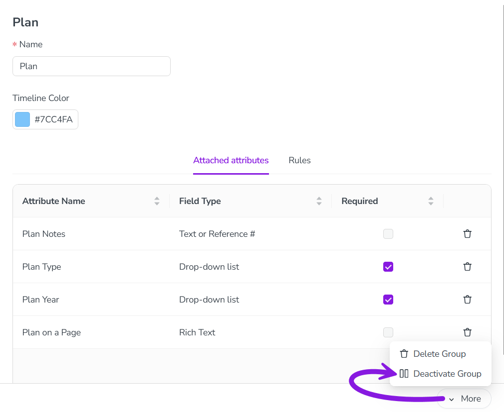

Deactivate or delete activity type groups
If you no longer need an activity type group, you have two options: you can either deactivate or delete the unneeded type group. Here's what each option does, and when you should use each one:
Deactivate an activity type group: When you deactivate an activity type group, you can no longer add activity types to the group. However, as long as the activity types within the group are still active, users can continue to use these activity types to create new activities. Use this option in most cases when you no longer need an activity type group, as it retains data for reporting purposes.
Delete an activity type group: Deleting an activity type group will permanently remove it from your Uptempo instance. You can only delete an activity type group if there are no more activities of the activity types that belong to the group, or any rules that involve the group. This means that, to delete an activity type group, you must first delete all activities within the group, and all rules related to the group. As a result, use this option only when you no longer need any of the data associated with these activities. Otherwise, deactivate the group instead.
Deactivate an activity type group
In the
 Activities section, click
Activities section, click  Settings:
Settings: 
In the Activity Configuration menu, click Activities > Types & Groups.
In the list panel on the left, click on the activity type group you want to deactivate. The selected activity type group's settings are shown in the settings panel on the right.
In the settings panel, click More > Deactivate Group to deactivate the activity type group:

The change is saved automatically, and takes effect immediately.
The activity type group is deactivated, and is displayed in the list panel with "(Inactive)" after its name.
To re-activate a deactivated activity type group, follow the same steps, then select More > Activate Group in step 4.
Delete an activity type group
In the
Activities section, click Settings.In the Activity Configuration menu, click Activities > Types & Groups.
In the list panel on the left, click on the activity type group you want to delete. The selected activity type group's settings are shown in the settings panel on the right.
In the settings panel, click More > Delete Group.
The change is saved automatically, and takes effect immediately.
The activity type group is deleted, and is removed from the list panel.